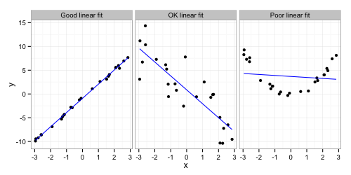

name: inverse layout: true class: center, middle, inverse --- # STAT 105: Lecture 9 ## Chapter 4: Describing Relationships Between Variables .footnote[Course page: [imouzon.github.io/stat105](https://imouzon.github.io/stat105)] --- layout:false .left-column[ ## Recap ### Residuals ] .right-column[ ###Residuals - The "residue" left over from fitting a line <center> <img src="residual_plpt.gif" alt="dmc logo" height="250"> </center> - Each point represents some \\((x_i, y_i)\\) pair from our data - We use the Least Squares approach to find the best fit line, \\(\hat{y} = b_0 + b_1 x\\) - For any value \\(x_i\\) in our data set, we can get a fitted (or predicted) value \\(\hat{y}_i = b_0 + b_1 x_i \\) ] --- .left-column[ ## Recap ### Residuals ] .right-column[ ###Residuals <center> <img src="residual_plpt.gif" alt="dmc logo" height="250"> </center> - The residual is the difference between the observed data point and the fitted prediction: \\[ e_i = y_i - \hat{y}_i \\] - **In the linear case**, using \\(\hat{y} = b_0 + b_1 x\\), we can also write \\[ e_i = y_i - \hat{y}_i = y_i - (b_0 + b_1 x_i) \\] for each pair \\((x_i, y_i)\\). ] --- .left-column[ ## Recap ### Residuals ] .right-column[ ###Residuals <center> <img src="residual_plpt.gif" alt="dmc logo" height="250"> </center> **ROPe**: **R**esiduals = **O**bserved - **P**redicted (using symbol \\(e_i\\)) - If \\(e\_i > 0\\) then \\(\hat{y}\_i > y\_i\\) meaning the observed is smaller than the predicted - we are "overpredicting" - If \\(e\_i < 0\\) then the observed is larger than the predicted - we are "underpredicting" Obviously, we would like our residuals to be small compared to the size of response values. ] <!--- ---> --- .left-column[ ## Recap ## Good Fit ] .right-column[ <center> <h3>Knowing when a relationship fits the data well</h3> </center> So far we have been fitting lines to describe our data. A first question to ask may be something like: - **Q**: What kind of situations can a linear fit be used to describe the relationship between an expreimental variable and a response? - **A**: Any time both the experimental variable and the response variable are numeric. **However** all fits are not created the same: <center>  </center> ] --- .left-column[ ## Recap ## Good Fit ### Numeric Desc. ] .right-column[ <center> <h3>Describing Fit Numerically</h3> </center> **1. Sample correlation (aka, sample linear correlation)** For a sample consisting of data pairs \\((x_1, y_1)\\), \\((x_2, y_2)\\), \\((x_3, y_3)\\), ... \\((x_n, y_n)\\), the sample linear correlation, \\(r\\), is defined by `\[ r = \frac{ \sum_{i = 1}^{n} (x_i - \bar{x}) (y_i - \bar{y}) }{ \sqrt{ \left(\sum_{i = 1}^{n} (x_i - \bar{x})^2 \right) \left(\sum_{i = 1}^{n} (y_i - \bar{y})^2 \right) } } \]` which can also be written as `\[ r = \frac{ \sum_{i = 1}^{n} x_i y_i - n \bar{x}\bar{y} }{ \sqrt{ \left(\sum_{i = 1}^{n} x_i^2 - n\bar{x}^2 \right) \left(\sum_{i = 1}^{n} y_i^2 - n \bar{y}^2 \right) } } \]` ] --- .left-column[ ## Recap ## Good Fit ### Numeric Desc. ] .right-column[ **1. Sample correlation (aka, sample linear correlation)** The value of \\(r\\) is always between -1 and +1. - The closer the value is to -1 or +1 the stronger the linear relationship. - Negative values of \\(r\\) indicate a negative relationship (as \\(x\\) increases, \\(y\\) decreases). - Positive values of \\(r\\) indicate a positive relationship (as \\(x\\) increases, \\(y\\) increases). - One possible rule of thumb: | Range of \\(r\\) | Strength | Direction | |-------------------|---------------|-----------| | 0.9 to 1.0 | Very Strong | Positive | | 0.7 to 0.9 | Strong | Positive | | 0.5 to 0.7 | Moderate | Positive | | 0.3 to 0.5 | Weak | Positive | | -0.3 to 0.3 | Very Weak/No Relationship | | | -0.5 to -0.3 | Weak | Negative | | -0.7 to -0.5 | Moderate | Negative | | -0.9 to -0.7 | Strong | Negative | | -1.0 to -0.9 | Very Strong | Negative | ] --- .left-column[ ## Recap ## Good Fit ### Numeric Desc. ] .right-column[ <center> </center> The values of \\(r\\) from left to right are in the plot above are: ``` r=0.9998782 r=-0.8523543 r=-0.1347395 ``` - In there first case the linear relationship is almost perfect, and we would happily refer to this as a **very strong**, **positive** relationship between \\(x\\) and \\(y\\). - In there second case the linear relationship is seems appropriate - we could safely call it a **strong**, **negative** linear relationship between \\(x\\) and \\(y\\). - In there third case the value of \\(r\\) indicates that there is **no linear relationship** between the value of \\(x\\) and the value of \\(y\\). In each case we *can* fit a linear model. However, - a line is clearly a good choice for the data on the left - the middle data could be described well by a line, but the relationship is not as obvious as the case on the left. - a linear relationship is clearly clearly inappropriate for the data on the right (something like \\(x^2\\) would be better). We need a way to identify the quality of the fit **concretely** ] --- .left-column[ ## Recap ## Good Fit ### Numeric Desc. ] .right-column[ **1. Sample correlation (aka, sample linear correlation)** **Example**: Stress and Lifetime of Bars The data can be found in Lecture 9. We can use it to calculate the following values: <center> <span style = "font-size: 60%"> \\[ \sum\_{i = 1}^{10} x\_i = 200, \sum\_{i = 1}^{10} x\_i^2 = 5412.5, \\] \\[ \sum\_{i = 1}^{10} y\_i = 484, \sum\_{i = 1}^{10} y\_i^2 = 25238, \sum\_{i = 1}^{10} x\_i y\_i = 8407.5, \\] </span> </center> and we can write: <span style = "font-size: 80%"> `\[ \begin{align} r &= \frac{ \sum_{i = 1}^{n} x_i y_i - n \bar{x}\bar{y} }{ \sqrt{ \left(\sum_{i = 1}^{n} x_i^2 - n\bar{x}^2 \right) \left(\sum_{i = 1}^{n} y_i^2 - n \bar{y}^2 \right) } } \\\\ &= \frac{ 8407.5 - 10 (20) (48.5) }{ \sqrt{ \left(5412.5 - 10 (20)^2 \right) \left(25238 - 10 (48.4)^2 \right) } } \\\\ &= -0.795 \end{align} \]` </span> So we would say that stress applied and lifetime of the bar have a **strong, negative, linear relationship**. ] --- .left-column[ ## Recap ## Good Fit ### Numeric Desc. ] .right-column[ **2. Coeffecient of Determination (\\(R^2\\))** We know that our responses have variability - they are not always the same. We hope that the relationship between our response and our explanatory variables explains some of the variability in our responses. \\(R^2\\) is the fraction of the total variability in the response (\\(y\\)) accounted for by the fitted relationship. - When \\(R^2\\) is close to 1 we have explained **almost all** of the variability in our response using the fitted relationship (i.e., the fitted relationship is good). - When \\(R^2\\) is close to 0 we have explained **almost none** of the variability in our response using the fitted relationship (i.e., the fitted relationship is bad). There are a number of ways we can calculate \\(R^2\\). Some require you to know more than others or do more work by hand. ] --- .left-column[ ## Recap ## Good Fit ### Numeric Desc. ] .right-column[ **2. Calculating Coeffecient of Determination (\\(R^2\\))** **Method a**. Using the data and our fitted relationship: For an experiment with response values \\(y_1, y_2, \ldots, y_3\\) and fitted values \\(\hat{y}_1, \hat{y}_2, \ldots, \hat{y}_3\\) we calcuate the following: `\[ R^2 = \frac{ \sum_{i=1}^n (y_i - \bar{y})^2 - \sum_{i=1}^n (y_i - \hat{y}_i)^2 }{ \sum_{i=1}^n (y_i - \bar{y})^2 } \]` - This is the longest way to calculate \\(R^2\\) by hand. - It requires you to know every response value in the data (\\(y_i\\)) and every fitted value (\\(\hat{y}_i\\)) ] --- .left-column[ ## Recap ## Good Fit ### Numeric Desc. ] .right-column[ **2. Calculating Coeffecient of Determination (\\(R^2\\))** **Method b**. Using Sums of Squares For an experiment with response values \\(y_1, y_2, \ldots, y_3\\) and fitted values \\(\hat{y}_1, \hat{y}_2, \ldots, \hat{y}_3\\) we calcuate the following: - Total Sum of Squares (SSTO): a baseline for the variability in our response. \\[ SSTO = \sum_{i=1}^n (y_i - \bar{y})^2 \\] - Error Sum of Squares (SSE): The variability in the data after fitting the line \\[ SSE = \sum_{i=1}^n (y_i - \hat{y}_i)^2 \\] - Regression Sum of Squares (SSR): The variability in the data accounted for by the fitted relationship \\[ SSR = SSTO - SSE \\] ] --- .left-column[ ## Recap ## Good Fit ### Numeric Desc. ] .right-column[ **2. Calculating Coeffecient of Determination (\\(R^2\\))** **Method b**. Using Sums of Squares, continued We can write the \\(R^2\\) using these sums of squares: \\[ R^2 = \frac{SSR}{SSTO} = \frac{SSTO - SSE}{SSTO} = 1 - \frac{SSE}{SSTO} \\] - **Q**: What's the advantage of using the sums of squares? - **A**: The values of SSTO, SSE, and SSR are used in many statistical calculations. Because of this, they are commonly reported by statistical software. For instance, fitting a model in JMP produces these as part of the output. ] --- .left-column[ ## Recap ## Good Fit ### Numeric Desc. ] .right-column[ **2. Calculating Coeffecient of Determination (\\(R^2\\))** **Method c**. A special case when the relationship is linear If the relationship we fit between \\(y\\) and \\(x\\) is linear, then we can use the sample correlation, \\(r\\) to get: \\[ R^2 =(r)^2 \\] **NOTE**: Please, please, please, understand that this is only true for linear relationships. ] --- .left-column[ ## Recap ## Good Fit ### Numeric Desc. ] .right-column[ **Example**: Stress and Lifetime of Bars The data can be found in Lecture 9. Earlier, we found \\(r = -0.795\\). Since we are describing the relationship using a line, then we can use the special case: \\[ R^2 = (r)^2 = (-0.795)^2 = 0.633 \\] In other words, 63.3% of the variability in the lifetime of the bars can be explained by the stress the bars were placed under. ]